Cologny
The Château El Masr
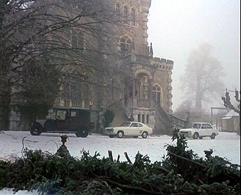
THE
PERSUADERS!: The
Ozerov Inheritance (Roy Ward
Baker: October 1970)
Danny and Brett are taken by Princess Alexandra for an audience with
Grand Duchess Ozerov at her home in exile.
(Identified by Sietse
Postma, August 2018)
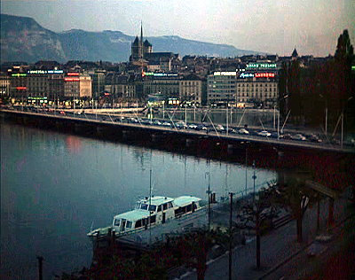
Floral Clock, located between the Mont Blanc bridge and the Jardin Anglais
DANGER MAN: A Room in the Basement (Don Chaffey: 1964)
Establishing shot Switzerland.
Route de Florissant
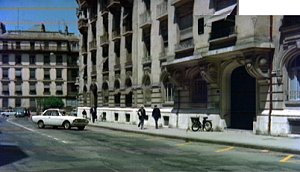
DANGER MAN: Are You Going to be More Permanent? (Don Chaffey: 1964)
Drake arranges to meet with Josef Laclos at the Geneva’s Natural History Museum (3 Route de Florissant).
(Identified by Paul Stroud, September 2014)
THE PROTECTORS: The Quick Brown Fox (Don Chaffey: Summer 1971)
The bank in Geneva where Keller’s agent is to pick up some more funds.
(Identified by Paul Stroud, September 2014)
Geneva Airport
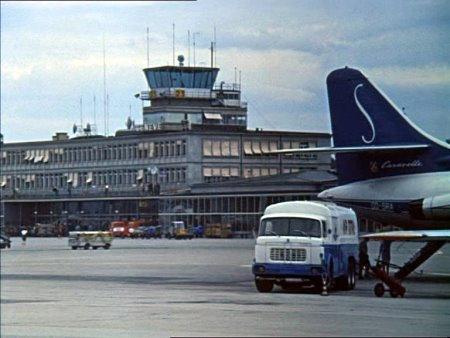
DANGER
MAN: I’m Afraid You
Have the Wrong Number (George Pollock: 1965)
Drake flies into Geneva Airport posing as a private detective to
investigate the death of Standfast. He is immediately picked up by the
Swiss Police.
THE
SAINT: The Russian
Prisoner (Peter Moxey:
February 1966)
Simon Templar and Irma Jorovitch travel to Switzerland and arrive at
Geneva Airport.
THE CHAMPIONS: The Gilded Cage (Cyril Frankel:
September 1967)
Craig reports back to Tremayne, from Geneva Airport, that Richard may
have been flown to Heathrow.
Harry arrives in Geneva
Lake Geneva and Jet d’Eau, Switzerland
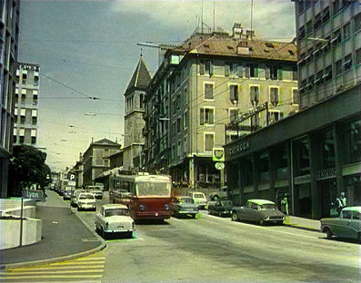
Rue de Temple/Quai Turrettini
DANGER MAN: Are You Going to be More Permanent? (Don Chaffey: 1964)
John Drake is sent to Geneva to follow up the disappearance of two British agents (establishing footage of Jet d’Eau zooming in on the Casino). He is booked into the Hotel “Beau Lac” on the Quai de Bergues by the Colonel. (footage representing the hotel includes Hotel Beau Rivage, Quai du Mont-Blanc and night shots of La Cité Du Temps, Pont de la Machine and Quai de Bergues). To start his investigation Drake goes to see Wolf Kronenberger at his tailors shop (Hotel Touring-Balance 13 Place Longemalle). Later, after another attempted rendezvous with Leslie Arden fails Drake goes around to her flat (Corner of Rue de Temple and Quai Turrettini).
DANGER MAN: A Room in the Basement (Don Chaffey: 1964)
Drake is in Geneva, summoned by Susan Turnbull.
DANGER MAN: Say It With Flowers (Peter Yates 1965)
John Drake check in to his Zurich hotel (Hotel Touring-Balance 13 Place Longemalle).
DANGER MAN: I’m Afraid You Have the Wrong Number (George Pollock: 1965)
Drake goes to Geneva posing as a private detective to investigate the death of Standfast (establishing shots of Switzerland including Jet d’Eau and the Brunswick monument).
THE
SAINT: The Russian
Prisoner (Peter Moxey: February 1966)
Simon Templar and Irma Jorovitch arrive in Geneva and take a room at
the Hotel Touring-Balance (13 Place Longemalle).
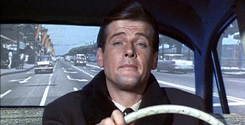
THE
SAINT: To Kill a Saint
(Robert Asher: December 1966)
Simon and Sergeant Luduc continue to race through Paris after the car
driven by Simon’s failed assassin (back projection of Quai
du Mont-Blanc driving past the Brunswick Monument and down the Rue du
Mont-Blanc).
THE
ADVENTURER: Has Anyone
Here Seen Kelly (Val Guest)
Establishing shot of lake and fountain.
(Spotted by Jaz Wiseman, January 2005)

THE PERSUADERS!: The Ozerov Inheritance (Roy Ward Baker: October 1970)
Brett and Danny's hotel. Later Danny drives past the hotel on his way to the bank.
(Spotted by Paul Stroud, March 2010)
Place des Bergues

THE PERSUADERS!: The Ozerov Inheritance (Roy Ward Baker: October 1970)
Danny drives to Walther and Dante's office.
(Spotted by Paul Stroud, March 2010)
Place du Bourg de Four

THE PERSUADERS!: The Ozerov Inheritance (Roy Ward Baker: October 1970)
Danny and Brett leave the Police Station after being interviewed about the death of Monsieur Ganguin.
(Spotted by Paul Stroud, March 2010)
Place de Molard, Geneva
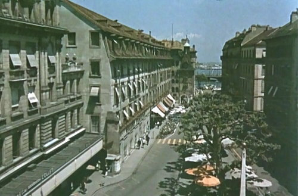
DANGER
MAN: I’m Afraid You
Have the Wrong Number (George Pollock: 1965)
Drake is taken straight from Geneva Airport to Police headquarters to
be questioned by Captain Schulman.
THE
BARON: Diplomatic
Immunity (Leslie Norman:
August 1965)
Templeton-Greene sends John Mannering to meet his contact in this hotel
in Pamaranea.

Danny Parks his car in front of the Caisse d'Epargne on the Place Philibert Berthelier, Rue des Moulins on his way to the Yelker Trust Bank.
(Spotted by Paul Stroud, March 2010)
Graubünden
Piz Corvatsch cable car, Surlej
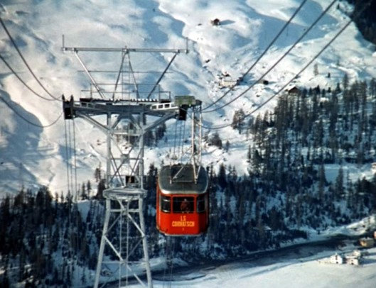
DEPARTMENT S: The Ghost of Mary Burnham (Cyril Frankel : 1968)
Stewart Sullivan meets Sir Curtis in a cable car in an Alpine ski resort.
(Spotted by Michael Richardson, November 2023)
Grisons

St. Moritz
DEPARTMENT S: The Trojan Tanker (Ray Austin: June 1968)
Tag scene (Olympia Bob Run St. Moritz-Celerina).
Vaud
Montreux
DANGER MAN: A Room in the Basement (Don Chaffey: 1964)
Establishing shot of Swiss pleasure boat on Lake Geneva opposite Montreux.
Village of Gilon
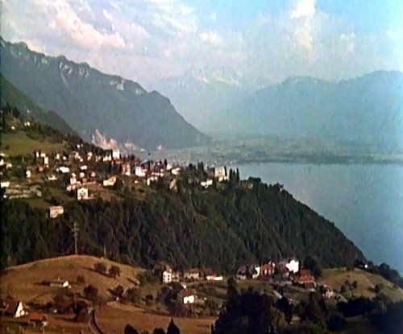
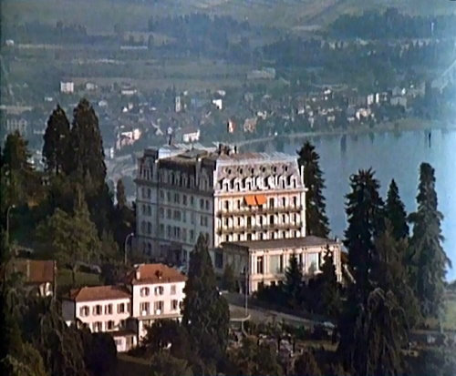
THE
BARON: And Suddenly
You're Dead (Cyril Frankel: January 1966)
John Mannering is waiting in his hotel for Cordelia to come down from
her room (large hotel on Route de Gilon by the railway station).
The Saint travels to Switzerland looking for the countess.
Village of Caux

Identified by Antony
Glauser, March 2020
DANGER
MAN: Say It With
Flowers (Peter Yates: 1965)
Wallace is summoned to Die Brajanska Klinik, Heibeck (Caux
Palace Hotel).
After searching the town and the surrounding area for the gadget factory, Simon suggests to Colonel Smolenko that they try the local monastery (Caux Palace Hotel).
Valais
Saint-Séverin
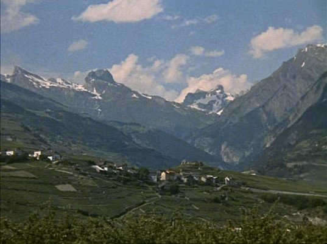
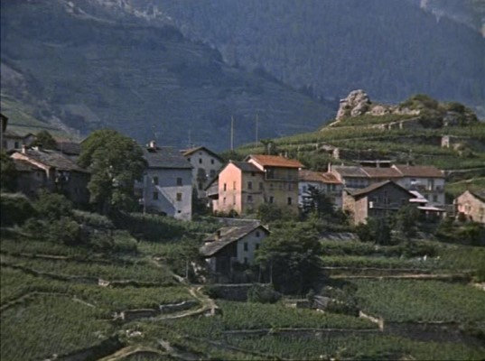
THE CHAMPIONS: The Survivors (Cyril Frankel: Early 1968)
Craig, Sharron and Richard arrive in Austria to investigate the recent killing of three students.
Sunegga
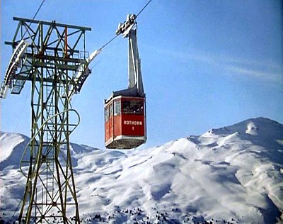
DEPARTMENT S: The Treasure Of The Costa Del Sol (John Gilling: September 1968)
Stewart reports to see Sir Curtis on the Rothorn cablecar and is shown some counterfeit dollars.
Saint-Cergue
123, 1264 Saint-Cergue
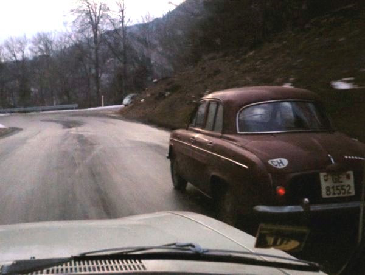
THE PERSUADERS!: The Ozerov Inheritance (Roy Ward Baker: October 1970)
On his way to deliver important documents, Professor Ganguin's car is forced off the road by Walther and Dante, in their car.
(Identified by Sietse Postma, August 2018)
Place Sy-Vieuxville
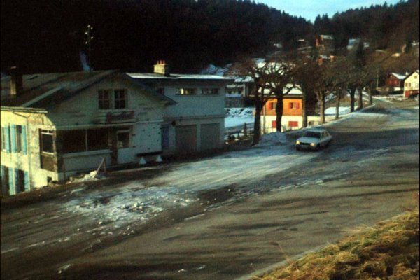
THE PERSUADERS!: The Ozerov Inheritance (Roy Ward Baker: October 1970)
After leaving his house to deliver important documents, Professor Ganguin's car is followed by Walther and Dante, in their car.
(Identified by Sietse Postma, August 2018)
Route d'Arzier, 1264 Saint-Cergue (near junction with Route de la Prangine)
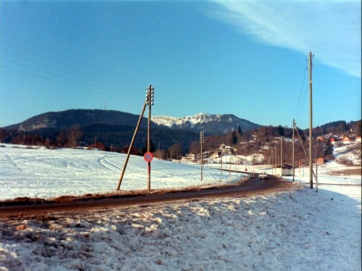
THE PERSUADERS!: The Ozerov Inheritance (Roy Ward Baker: October 1970)
Danny and Brett are taken, in a car, by Princess Alexandra to an unknown location.
(Identified by Sietse Postma, August 2018)
Wilderswil, Interlaken-Oberhasli

DANGER MAN: A Room in the Basement (Don Chaffey: 1964)
Bernhard’s Swiss farmstead in the Mountains.
(Identified by Antony Glauser, January 2012)
Schlössli Hotel, Unspunnenstrasse 8
(additional information from Daniel Bauer, May 2019)
Ticino
Brissago

THE CHAMPIONS: The Final Countdown (John Gilling: January 1968)
Nazis divers search lake near Hallstadt, Germany, where the bomb was dropped.
(Identified by Sietse Postma, July 2023)
Uri
Furka Pass


THE PRISONER: Do Not Forsake Me Oh My Darling (Pat Jackson: August 1967)
Number 6 drives across Europe to Kandersfeld, Austria, he drives his Lotus through a high mountain pass. He is followed by Potter, who has place a tracker on the Lotus (footage from GOLDFINGER).
Film:
GOLDFINGER (1964)
Hospental
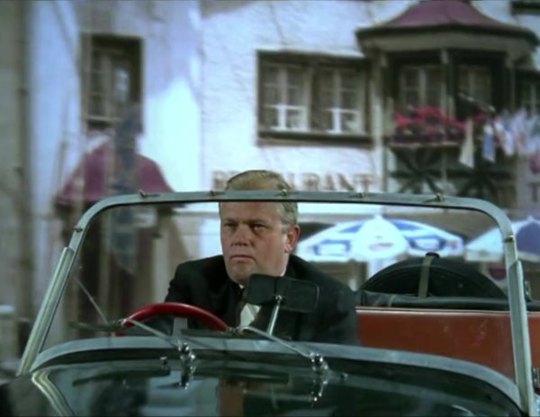
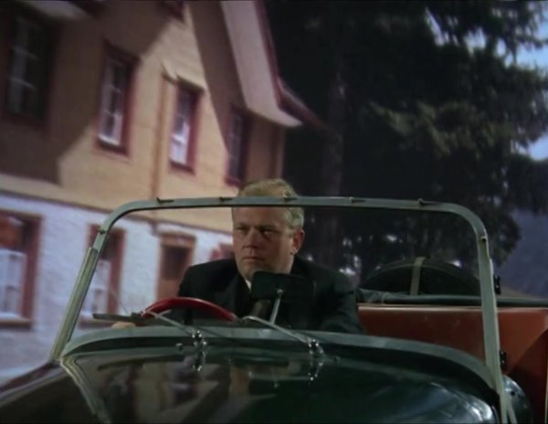
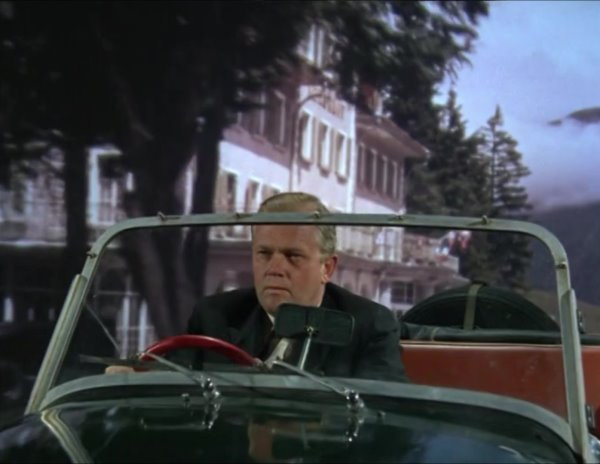
THE PRISONER: Do Not Forsake Me Oh My Darling (Pat Jackson: August 1967)
Number 6 drives his Lotus into Kandersfeld, Austria (Gotthardstrasse Hospental). He is followed by Potter, who has place a tracker on the Lotus (footage probabaly shot during the making of GOLDFINGER).
Zurich
Zurich Airport
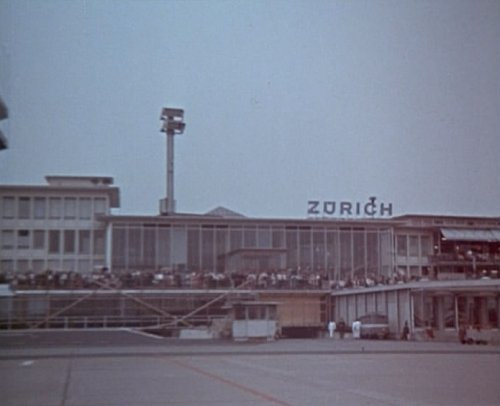
DANGER
MAN: Say It With
Flowers (Peter Yates 1965)
John Drake flies into Zurich airport.
THE
SAINT: The Death Game
(Leslie Norman: November 1966)
Simon flies into Zurich airport posing as Bill Bast.
Return to Index